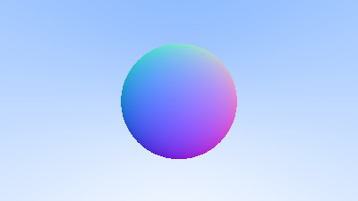

Ray tracing in a weekend in python
1. From the book Raytracing in a weekend
code adapted to python
2. emacs configuration
(org-babel-do-load-languages
'org-babel-load-languages
'((python . t)))
(setq org-src-preserve-indentation t)
3. helper functions
from utilities import point3,color,ray,vec3 import math def dot(vec1, vec2): return (vec1.x * vec2.x + vec1.y * vec2.y + vec1.z * vec2.z ) import math def unit_vector(v): length = math.sqrt(v.x**2+ v.y**2+ v.z**2) return vec3(v.x/length, v.y/length, v.z/length) def ray_color(r): t = hit_sphere(point3(0,0, -1), 0.5, r) if( t > 0.0): N = unit_vector(r.at(t) - vec3(0,0,-1)) res = vec3(N.x + 1, N.y + 1, N.z + 1) * 0.5 return res unit_direction = unit_vector(r.dir) t = 0.5* (unit_direction.y + 1.0) return color(1.0,1.0,1.0)* (1.0-t) + color(0.5,0.7,1.0) * t def write_color(ppm,pixel_color): #translate 0,255 ir = int(255* pixel_color.x) ig = int(255* pixel_color.y) ib = int(255* pixel_color.z) ppm.write(str(ir) + " " + str(ig) + " " + str(ib)+ "\n") def hit_sphere(center, radius, r): oc = r.orig - center a = dot(r.dir, r.dir) b = 2.0 * dot(oc, r.dir) c = dot(oc, oc) - (radius * radius) discrim = b*b - 4*a*c if(discrim < 0): return -1.0 else: return (-b - math.sqrt(discrim)) / (2.0 *a)
4. main function
#P3 : colors are in ascii #width and height # max value aspect_ratio = 16.0/9.0 image_width = 400 image_height= int(image_width / aspect_ratio) #camera viewport_height = 2.0 viewport_width = aspect_ratio * viewport_height focal_length = 1.0 origin = point3(0,0,0) horizontal = vec3(viewport_width, 0,0) vertical = vec3(0, viewport_height, 0) lower_left_corner = origin - (horizontal/2) - (vertical/2) - vec3(0,0,focal_length) header = "P3\n"+ str(image_width)+ " "+str(image_height)+"\n255\n" with open('result.ppm', 'w') as ppm: ppm.write(header) for j in range(image_height,-1 ,-1): print("scanlines remaining "+ str(j) + "\n") for i in range(image_width): u = float(i)/(image_width - 1) v = float(j)/(image_height- 1) vecu = vec3(horizontal.x * u , horizontal.y * u , horizontal.z * u) vecv = vec3(vertical.x * v ,vertical.y * v ,vertical.z * v) r = ray(origin, lower_left_corner + vecu+ vecv- origin) pixel_color = ray_color(r) write_color(ppm, pixel_color)
5. write the utility classes
import vector class vec3: def __init__(self,x,y,z): self.x =x self.y = y self.z = z def __add__(self, vec2): return vec3(self.x + vec2.x, self.y + vec2.y ,self.z + vec2.z) def __sub__(self, vec2): return vec3(self.x - vec2.x, self.y - vec2.y ,self.z - vec2.z) def __mul__(self, scalar): return vec3(scalar*self.x,scalar*self.y,scalar*self.z) def __truediv__(self, scalar ): return vec3(self.x/scalar,self.y/scalar,self.z/scalar) def __floordiv__(self, scalar): return vec3(self.x/scalar,self.y/scalar,self.z/scalar) class ray: def __init__ (self, origin, direction): self.orig = vec3(origin.x, origin.y , origin.z) self.dir = vec3(direction.x,direction.y , direction.z) def at(self,t): return self.orig + (self.dir * t) point3 = vec3 color = vec3
6. render blue to white gradient
6.1. start from sending rays into the scene
not really sure how I did that, all I did was write utility methods
6.2. understood python's operator overloading a little bit

7. render a sphere
- only 2 methods need to be changed \(hit\_sphere\ and\ ray\_color\)
7.1. DONE fix bug there are only red scan lines

8. Shading with surface normals
- how are the normals computed \(hitpoint - center\)

9. TODO materials
9.1. diffuse materials
has something to do with reflection and refraction and how diffuse materials behave wrt above